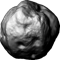
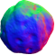

GTCS Game Engine:
Tutorial 5: Illumination
Tutorial 4 <-- Tutorial 5 --> Tutorial 6
Main tutorial guide page
Introduction
In this tutorial, we are going to look at how to enhance the look of our game scene using lighting effects. We are going to see how to create different types of light sources and create renderables that react to the lights. We will also look at a renderable that can react to lighting in a way that gives more depth to 2D graphics.
Covered Topics: Illumination • Light Renderable Object • Normal Maps
Demonstrations: Light Renderables • Using Normal Maps
Complete source code for all tutorials can be downloaded from here.
Illumination
In tutorial 2, we have seen the use of ambient lighting to illuminate our renderables. The ambient lighting sources is controlled with the setGlobalAmbientIntensity() function. This source is always active and it adjusts the lighting on all renderables in our scene. If we want to disable the light, we set the intensity to 0. The lighting affect is analagous to increasing the backlight intensity on your cell phone or laptop. Everything gets "brightened" by the same amount.
The game engine supports 3 other types of light sources.
- Point - An omnidirectional light source in space. Similar to a hovering firefly with a "sphere of illumination" wherever it goes.
- Spot - A cone-shaped light source directed at a location. Similar to a flashlight pointing at a wall.
- Directional - A planar light source where light is equally intense at all incident points. Similar to the screen backlight of electronics devices.
These different lighting types are declared using a number of parameters. Proper use of lighting requires...
- Declare a light source with the type and parameters defining it's characteristics.
- Idenfity to each applicable renderable that it should account for the light source when drawing itself.
[Note: This second requirement may seem odd but lighting calculations are essentially a manipulation of how pixels are drawn to the screen (how the object looks). Since we are familiar with the fact that the "look" of game elements is under the purview of the renderable, we treat lighting as a parameter we add to the renderable object.]
To create a light, we allocate a new Light object and set parameters using accessor methods. There are many settings of which certain ones will be used or ignored based on the type of light. Here is an overview of some of the settings we can set...
setLightType()- Identifies what type of light to render as. Valid choices are Light.eLightType.ePointLight, Light.eLightType.eSpotLight and Light.eLightType.eDirectionalLight.setColor()- Color of the light using a 4-value vector identifying red, green, blue and alpha values from 0.0 to 1.0.setIntensity()- A value from 0.0 to 1.0 giving the strength of the light.setXPos(), setYPos(), setZPos()- The functions allow you to set the X, Y and Z coordinates of where the light is positioned in 3D space. Though we are working with a 2D game scene, our light needs to exist in 3D space to allow for the calculations to illuminate the scene (used only for point and spot lights).setNear(), setFar()- The functions allow you to set the radii for the area of affect for light sources. From the center of the light to the near radius, the intensity will be constant. From the near radius to the far radius, the intensity will gradually drop off effectively softening the edges of the area of affect. If you set both values to be the same, the edge of the area of illumination will be very sharp (used only for point and spot lights).setDropOff()- Identifies how quickly the light intensity will fall as we reach the edge of the area of the lighting affect (used only for point and spot lights).setDirection()- Provide a vector of 3 components to identify the direction the light should point (used only for directional and spot lights).
Types of Light
Point Lights
A point light can be compared to a lightbulb hovering in mid-air illuminating a spherical volume around it. It has intensity, color, size and position. The amount of the game scene that will be illuminated with be determined by the size of the illumination volume (determined by the radius of affect from the center point) and the location of the point. Figure 5-1 provides a visual representation of the affect. To create a point light, we allocate a new Light object and set parameters using accessor methods.
Spot Lights
Spot lights are more complex than point lights in that they utilize more parameters to give more of a directional affect than the point light. Using angles as illustrated in figure 5-2, we can see how a spot light illuminates a surface.
The cone angles in figure 5-2 affect the intensity of the light across the area of affect. The attenuation of light over a distance will cause a diffusion on the surface particularly near the edges and these angles are meant to simplify applying this affect. To set these angles, we use the setInner() and setOuter() functions. These functions accept an angle in radians.
Directional Lights
A directional light is similar to ambient light in that every pixel illuminated by it receives the light with equal intensity. However, while the ambient light source allows us to set just the intensity, we can also define direction for directional light sources. Since we are dealing with two dimensional renderables, the direction of the light is not going to provide a sense of depth like it would in three dimensional space. This will change when we look at normal mapping and shadows where the directional light can be used to enhance the scene.
LightRenderable
To demonstrate the light, in the next example, we will create a point light. We will set the WASD keyboard controls to allow moving the light around the screen. We will set the ambient light intensit to a low level for contrast. You can see the demonstration here.
We will allocate a new Light object and set parameters using accessor methods.
[Note: The engine is setup to allow a LightRenderable to calculate up to four light sources. To keep managing lights simple due to GameObject overlap, you should limit your game to no more than four lights sources in your project.}
function MyGameScene() {
this.mCamera = null;
this.mBg = null;
this.mMinionRenderable = null;
this.mMinionObject = null;
this.mLight = null;
this.kBG = "assets/bg.png";
this.kTexture = "assets/minion_spritesheet.png";
}
gEngine.Core.inheritPrototype(MyGameScene, Scene);
MyGameScene.prototype.loadScene = function () {
gEngine.Textures.loadTexture(this.kBG);
gEngine.Textures.loadTexture(this.kTexture);
};
MyGameScene.prototype.unloadScene = function () {
gEngine.Textures.unloadTexture(this.kBG);
gEngine.Textures.unloadTexture(this.kTexture);
};
Code snippet 5-1: Loading Assets
To illuminate our game objects, we need to use a renderable that knows how to work with lights. The LightRenderable has all of the same functionality as SpriteAnimateRenderable plus the ability to react to lighting affects.
MyGameScene.prototype.initialize = function () {
this.mCamera = new Camera(
vec2.fromValues(50, 40), // position of the camera
100, // width of camera
[0, 0, 500, 400] // viewport (orgX, orgY, width, height)
);
this.mCamera.setBackgroundColor([0.8, 0.8, 0.8, 1]);
// create a background for the scene
this.mBg = new LightRenderable(this.kBG);
this.mBg.getXform().setSize(100, 80);
this.mBg.getXform().setPosition(50, 40);
// we use a new object type that knows how to render with lights
this.mRenderable = new LightRenderable(this.kTexture);
this.mRenderable.setElementPixelPositions(130, 310, 0, 180);
// create the light and setup the parameters we need
this.mLight = new Light();
this.mLight.setLightType(Light.eLightType.ePointLight);
this.mLight.setColor([1.0, 1.0, 1.0, 1]);
this.mLight.setXPos(55);
this.mLight.setYPos(61);
this.mLight.setZPos(-1);
this.mLight.setNear(8);
this.mLight.setFar(10);
this.mLight.setIntensity(1);
// associate the light with the renderables
this.mBg.addLight(this.mLight);
this.mRenderable.addLight(this.mLight);
// create a new game object with the new renderable
this.mGameObject = new GameObject(this.mRenderable);
this.mGameObject.getXform().setSize(16, 16);
this.mGameObject.getXform().setPosition(30, 50);
// We could create a GameObject for the background but since
// it will not be interacting with any other object, we
// can leave it as a pure renderable
// we set the ambient light low to emphasize our light affect
gEngine.DefaultResources.setGlobalAmbientIntensity(0.4);
};
In code snippet 5-2, we created a new point light and set position. Notice in the last line, we set the intensity of the ambient light to 0.4. Ambient light affects all game objects regardless of what type of renderable. We set this low value to dim our scene and to make the point light stand out.
Next, we draw.
MyGameScene.prototype.draw = function () {
gEngine.Core.clearCanvas([0.8, 0.8, 0.8, 1.0]);
this.mCamera.setupViewProjection();
this.mBg.draw(this.mCamera);
this.mMinionObject.draw(this.mCamera);
};
Code snippet 5-3: Draw Function
For our Update() function, we set it up so that the WASD keys on the keyboard will control the location of the point light.
MyGameScene.prototype.update = function () {
if (gEngine.Input.isKeyPressed(gEngine.Input.keys.A)) {
var x = this.mLight.getPosition()[0];
this.mLight.setXPos(x - 0.5);
}
if (gEngine.Input.isKeyPressed(gEngine.Input.keys.D)) {
var x = this.mLight.getPosition()[0];
this.mLight.setXPos(x + 0.5);
}
if (gEngine.Input.isKeyPressed(gEngine.Input.keys.W)) {
var y = this.mLight.getPosition()[1];
this.mLight.setYPos(y + 0.5);
}
if (gEngine.Input.isKeyPressed(gEngine.Input.keys.S)) {
var y = this.mLight.getPosition()[1];
this.mLight.setYPos(y - 0.5);
}
};
Using Normal Maps
Directional and spot lights include a directional vector component to their definition. While, for spot lights, this setting will provide for a difference in diffusion between the closer and farther edges, it will not affect directional lights at all. This is because our renderables are in 2D.
A normal map can be used to hint to a renderable how to react to lighting for a given texture image. Below, we see a texture with it's normal. We need to make sure that we have pixel-for-pixel coordination between the two images. Many 3D modeling software packages can generate and export normal images (often called bump maps). Using these two images together, the engine can simulate specularity and diffusion of materials and enhance the lighting affect with regards to light direction.
|   |
To use normal maps, we need another renderable object. The IllumRenderable knows how to use normal maps and react to light accordingly. In our next example, we will demonstrate this using a spotlight. The angle of the spotlight will accentuate the affect we are looking for in our rock texture. We continue to use WASD to control the position of the light. How the rock is illuminated is going to change with the position of the light. We still have the minion texture and you will notice that by comparison, the lighting affect on the minion is flat and consistent. You can view the end result here.
First, we setup constants, declare variables and load our resources.
function MyGameScene() {
this.mCamera = null;
this.mBg = null;
this.mMinionRenderable = null;
this.mMinionObject = null;
this.mRockRenderable = null;
this.mRockObject = null;
this.mLight = null;
this.kBG = "assets/bg.png";
this.kTexture = "assets/minion_spritesheet.png";
this.kRockTexture = "assets/asteroids.png";
this.kRockNormalTexture = "assets/asteroidsNormal.png";
}
gEngine.Core.inheritPrototype(MyGameScene, Scene);
MyGameScene.prototype.loadScene = function () {
gEngine.Textures.loadTexture(this.kBG);
gEngine.Textures.loadTexture(this.kTexture);
gEngine.Textures.loadTexture(this.kRockTexture);
gEngine.Textures.loadTexture(this.kRockNormalTexture);
};
MyGameScene.prototype.unloadScene = function () {
gEngine.Textures.unloadTexture(this.kBG);
gEngine.Textures.unloadTexture(this.kTexture);
gEngine.Textures.unloadTexture(this.kRockTexture);
gEngine.Textures.unloadTexture(this.kRockNormalTexture);
};
Code snippet 5-5: Loading Assets for IllumRenderable
With our assets loaded, we continue with initialization. We create a new renderable with our texture and normal map. Since LightRenderable and IllumRenderable can handle sprite animation, we are going to take advantage of this.
- The images we are using have 59 frames of animation.
- Each frame is size at 61x64 pixels with a 2 pixel buffer between frames.
- Set the animation speed to 2.
For lighting, we are going to use a spot light.
- We set the direction to point towards the right.
- We set the position similar to the point light scenario.
- We set the outer and inner angles to soften the edges where light meets darkness.
MyGameScene.prototype.initialize = function () {
this.mCamera = new Camera(
vec2.fromValues(50, 40), // position of the camera
100, // width of camera
[0, 0, 500, 400] // viewport (orgX, orgY, width, height)
);
this.mCamera.setBackgroundColor([0.8, 0.8, 0.8, 1]);
// create a background for the scene
this.mBg = new LightRenderable(this.kBG);
this.mBg.getXform().setSize(100, 80);
this.mBg.getXform().setPosition(50, 40);
// we use an object type that knows how to render with lights
this.mMinionRenderable = new LightRenderable(this.kMinionTexture);
this.mMinionRenderable.setElementPixelPositions(130, 310, 0, 180);
// we use a new object type that render with normal maps
this.mRockRenderable = new IllumRenderable(this.kRockTexture,this.kRockNormalTexture);
this.mRockRenderable.setSpriteSequence(64, 0, 61, 64, 59, 2);
this.mRockRenderable.setAnimationType(
SpriteAnimateRenderable.eAnimationType.eAnimateRight);
this.mRockRenderable.setAnimationSpeed(2);
// create the light and setup the parameters we need
this.mLight = new Light();
this.mLight.setLightType(Light.eLightType.eSpotLight);
this.mLight.setColor([1.0, 1.0, 1.0, 1]);
this.mLight.setDirection([0.2, 0, -1]);
this.mLight.setXPos(10);
this.mLight.setYPos(50);
this.mLight.setZPos(10);
this.mLight.setOuter(1.6);
this.mLight.setInner(1.5);
this.mLight.setNear(20);
this.mLight.setFar(50);
this.mLight.setIntensity(1);
// associate the light with the renderables
this.mBg.addLight(this.mLight);
this.mMinionRenderable.addLight(this.mLight);
this.mRockRenderable.addLight(this.mLight);
// create a game object with the minion renderable
this.mMinionObject = new GameObject(this.mMinionRenderable);
this.mMinionObject.getXform().setSize(16, 16);
this.mMinionObject.getXform().setPosition(30, 50);
// create a game object with the rock animated renderable
this.mRockObject = new GameObject(this.mRockRenderable);
this.mRockObject.getXform().setSize(16, 16);
this.mRockObject.getXform().setPosition(60, 50);
// We could create a GameObject for the background but since
// it will not be interacting with any other object, we
// can leave it as a pure renderable
// we set the ambient light low to emphasize light affect
gEngine.DefaultResources.setGlobalAmbientIntensity(0.4);
};
We add the second GameObject to our Draw() function.
MyGameScene.prototype.draw = function () {
gEngine.Core.clearCanvas([0.9, 0.9, 0.9, 1.0]); // clear to light gray
this.mCamera.setupViewProjection();
this.mBg.draw(this.mCamera);
this.mMinionObject.draw(this.mCamera);
this.mRockObject.draw(this.mCamera);
};
Code snippet 5-7: Draw Function
Lastly, we add code to the Update() function to update the animation on our rock renderable.
MyGameScene.prototype.update = function () {
... Same code as in the previous example ...
// update the animation for the rock
this.mRockRenderable.updateAnimation();
};
With the direction and position that we have declared for the light, our normal map allows the image to respond to light. Below, we have a screenshot of the running example and we can see that we have a shininess depending on the position of the light and a shadow affect.
Conclusion
As we have seen, adding different types of light sources and using normal maps provides depth to our 2D game. This will immerse our player in the game by providing a more interesting environment and a sense of realism.
In tutorial 6, we continue to enhance the look of our scene by implementing shadow affects on our renderables to go along with lighting. We will also see how parallax works to add more depth in the scene.
Tutorial 4 <-- Tutorial 5 --> Tutorial 6
Main tutorial guide page